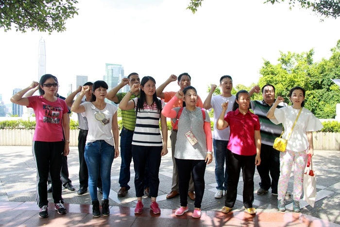
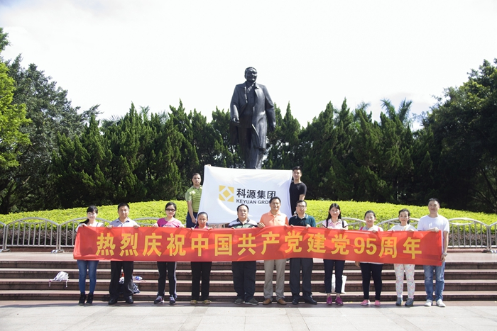
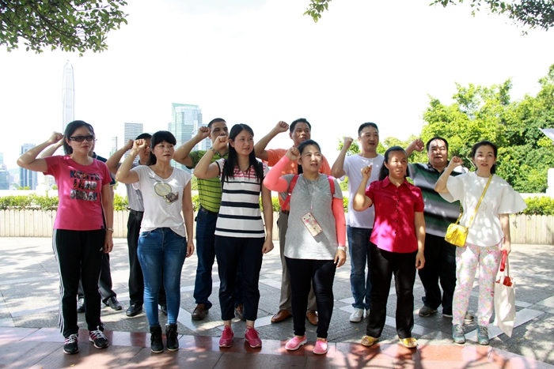
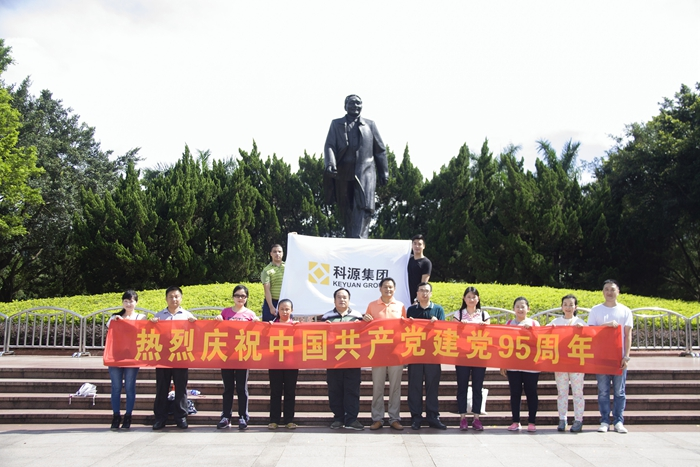
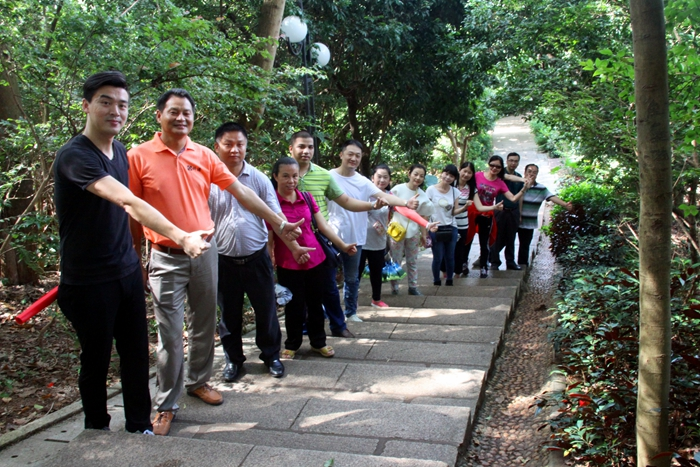
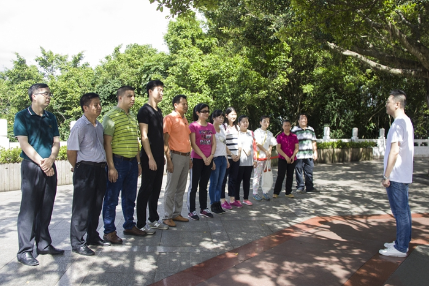
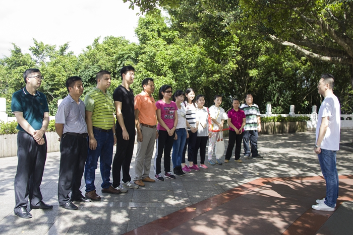

今天是7月1日，也是中国共产党成立95周年的纪念日。为迎接中国共产党成立95周年，深入贯彻落实党中央关于开展“两学一做”学习教育安排部署的具体要求，汇然实业党支部组织党员到莲花山开展庆祝中国共产党成立95周年系列活动。


“我志愿加入中国共产党，拥护党的纲领，遵守党的章程，履行党员义务……”高亢有力的声音回响在莲花山山顶。支部党员们郑重严肃地在邓小平同志的雕像前重温了入党誓词，不忘初心，更加深刻地感受到了共产党人的热血和担当。
参加活动的同志们纷纷表示，将以这次活动为契机，继续发扬党的优良传统，牢记全心全意为人民服务的宗旨，用实际行动践行誓言，在各自的工作岗位上再立新功。同时，将继续发扬“四种精神”，以推进“两学一做”教育为契机，发挥共产党员的先锋模范作用，为建设美丽、幸福、活力汇然而努力奋斗。


“我志愿加入中国共产党，拥护党的纲领，遵守党的章程，履行党员义务……”高亢有力的声音回响在莲花山山顶。支部党员们郑重严肃地在邓小平同志的雕像前重温了入党誓词，不忘初心，更加深刻地感受到了共产党人的热血和担当。



参加活动的同志们纷纷表示，将以这次活动为契机，继续发扬党的优良传统，牢记全心全意为人民服务的宗旨，用实际行动践行誓言，在各自的工作岗位上再立新功。同时，将继续发扬“四种精神”，以推进“两学一做”教育为契机，发挥共产党员的先锋模范作用，为建设美丽、幸福、活力汇然而努力奋斗。